Minecraft Skyblock⚓︎

Description Minecraft⚓︎
Minecraft est un jeu cubique à la fois jeu de construction et d'aventure.
Il y a donc devant nous deux possibilitées:
-
Le mode "survie" qui consiste à progresser dans le jeu en explorant les quatres coins du monde et en acquérant des "crafts" ( interface où l'on peut fabriquer des objets avec les ressources que l'on a, à partir d'une table de craft, "d'artisanat" ) qui permet d'avoir toutes les ressources du jeu.
-
Le mode "créatif", est un monde ouvert comme un bac à sable qui permet de faire toutes sortes de création et ainsi faire ressortir toute son imagination.
Deux principales versions du jeu :
- Minecraft Java Edition
- Minecraft Bedrock
Les modes de Minecraft
Minecraft est consistué de deux modes, l'un est le mode Solo où la personne crée son monde et doit survivre ou construire. Et puis nous avons le mode Multijoueurs1 qui est donc le principe de jouer avec des joueurs en ligne.
Il suffit de se connecter à des "serveurs" en ligne où se trouvent des mondes créé par d'autres joueurs. Et en effet dans ces serveurs nous pourrons alors retrouver des mini-jeux tels que le "Bedwars" ou encore le "Skyblock" !

C'est quoi le Skyblock ?
-Le skyblock d'où son nom en anglais "ciel" et "bloc". En effet le principe est de construire une île dans un monde ouvert dans le ciel à partir de "blocs" où vous pourrez vous fixer toutes sortes d'objectifs comme construire des décos, être le plus riche et en construisant différentes fermes/machines pour exploiter d'autres ressources afin de vous fixer vos objectifs.
Eau et Lave infini ?
Pour avoir de l'eau 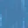 à l'infini il vous suffit de placer de l'eau dans un trou de 2x2, deux seaux d'eau  aux deux extremités des diagonales.
aux deux extremités des diagonales.
Cela peut fonctionner aussi via une glace qui a été cassé seulement après avoir été posé aux extremités du trou.
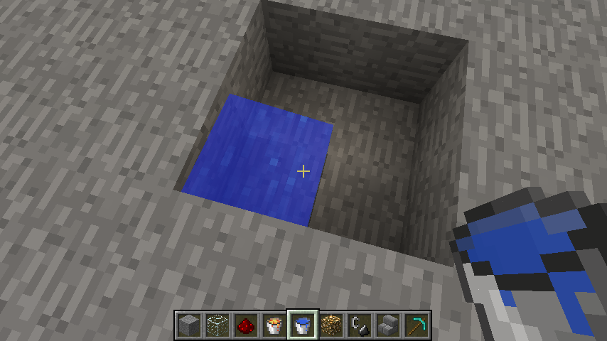
Il est possible d'avoir de la lave  à l'infini, mais cela concerne les joueurs jouant à partir de la version 1.17 étant donné que les stalactiques sont apparues pour la première fois en 1.17 et
à l'infini, mais cela concerne les joueurs jouant à partir de la version 1.17 étant donné que les stalactiques sont apparues pour la première fois en 1.17 et  qui ont permis aux joueurs d'avoir une source de lave infini dans l'overworld.
qui ont permis aux joueurs d'avoir une source de lave infini dans l'overworld.
Il vous suffit d'avoir principalement une source de lave, un bloc de stalactique et un chaudron 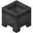 (il faut sept lingots de fer  pour pouvoir craft un chaudron).
pour pouvoir craft un chaudron).

Je tiens à dire que ce tuto pour le skyblock est principalement pour la version Java.
De plus je me penche plus sur le sujet des fermes/machines pour votre survie skyblock qui vous permettera d'acquerir plusieurs ressources notamment les principales comme le fer, le butin des monstres, et la cobblestone/stone.
Minerais/fermes à aquérir au plus vite pour bien débuter :⚓︎
Des fermes à savoir faire :
Chacune des fermes sont soit Auto2 ou Semi-Auto3.
| Entités | Fermes | Semi-Auto | Auto |
|---|---|---|---|
| Stone/cobblestone | Ferme à stone/cobblestone | ✅ | ⭕ |
| Loot de monstres | Ferme à mobs | ⭕ | ✅ |
| Lingot de fer | Ferme à fer | ⭕ | ✅ |
| Bûche de bois | Ferme à bois | ✅ | ⭕ |
| Pnj | Ferme à Pnj | ✅ | ⭕ |
Vous remarquerez le mot "entité" qui correspond à tous items (objets) ou des mobs (des monstres, des animaux, des villageois, et même les joueurs), pour en savoir plus :Cliquez-ici
Liste de quelques fermes/machines :⚓︎
Des fermes/machines à construction de blocks pour élargir son ile :⚓︎
Construire les fermes/machines
Pour chaque ferme ou machine, si vous en trouvez une que vous aimez ou voudriez l'essayer, il suffit de cliquer sur l'image en question et cela vous amenera sur une vidéo où je vous montre comment la faire à l'aide d'un mod nommé "Latematica" (anciennement appelé Shematica) ou alors venant d'une vidéo youtube explicative.
Des fermes à stone/cobblestone
Pour commencer un Skyblock il faut tout d'abord des blocks pour élargir son ile.
Pour ce faire nous avons la machine/ferme à cobblestone 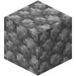 ou celle à stone  , il en existe plusieurs :
, il en existe plusieurs :
-
Rapide et efficace en début de partie mais devient très vite encombrante et longue à casser.
-
Dans la vidéo ci-dessous, je mets des dalles par-dessus la lave car sinon la lave risque d'enflammer des objets autour, tels que des tables de craft ou tous autres objets en bois.
-
Il est préférable de creuser un trou en-dessous de vous pendant que vous cassez la cobblestone pour miner dans le vide et ainsi ne pas détruire des blocks derrière l'emplacement de la cobblestone généré.

- Pas très longue à faire et ne demande pas énormément de ressources :
- Demande plus de mécanique en redstone mais avec les indications vous pourrez vous en sortir.
Autre Ferme à stone/cobblestone
Vous pourrez trouver une ferme à stone/cobblestone énorme et très complexe, attention cela est requis pour ceux qui ont une grande habilité avec de la redstone. Cliquez-ici
Des fermes/machines à minerais :⚓︎
Des fermes à fer
Dans un Skyblock il vous faudra à un moment ou un autre énormément de fer, pour cela il existe des Fermes à fer, le principe est simple, Mojang (ceux qui s'occupe du jeu Minecraft) ont fait un systeme dès lors où des pnjs4  sont avec des lits cela forme un village et alors il apparaitra un golem de fer
sont avec des lits cela forme un village et alors il apparaitra un golem de fer  . Lorsqu'il est tué, il laissera tomber du fer
. Lorsqu'il est tué, il laissera tomber du fer  sur le sol ainsi qu'un coquelicot 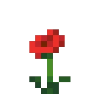.
sur le sol ainsi qu'un coquelicot 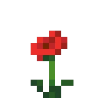.
-
Ferme à fer récente et fonctionnelle : Ferme à fer
-
Ferme à fer ancienne et dont la première de la vidéo que j'utilisais sur le serveur Play.Uni-Craft.fr : Anciennes ferme à fer
-
Ferme à fer dont j'ai aussi utilisé et qui fonctionne plutôt bien aussi : Autre ferme à fer
Des fermes à or
L'or peut servir pour plusieurs choses : pour votre désir personnel d'être riche et vous sentir comme un vrai pirate avec votre trésor, mais plus concrètement pour vos outils et armures même si ce n'est pas le meilleur matériau en terme de vie, mais c'est plutôt efficace sur une courte durée.
Puis vous pouvez faire de la nourriture dorée pour mieux saturer votre barre de nourriture  :
:
Les carottes dorées qui sont très utiles pour la saturation de votre barre de nourriture ou alors très connues les pommes dorées qui peuvent vous donner de la Régénération II (0:05) et de l'Absorption (2:00) qui sont très efficaces en combat.
Bien sûr ce n'est pas tout mais le reste des items à craft avec de l'or est moins utilisé .
Comment ça marche une ferme à or ?
Le principe de cette ferme est simple : vous devez mettre des portails du nether pour faire apparaître des piglins5 qui tombent sous l'effet d'un bonhomme de neige qui tire sur un de ses compatriotes ( ou bien dans les nouvelles versions du jeu il y a les oeufs de tortue).
Cela le force alors à intervenir et chute ensuite dans une coulée d'eau pour finalement tomber dans un trou qui le condamne à une mort certaine.
Il vous restera juste à mettre des entonnoirs  relier à des coffres
relier à des coffres  pour récuperer son butin : des pépites d'or 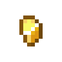 , quelques fois des lingots d'or 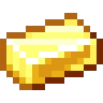 , sa chair putrifié
pour récuperer son butin : des pépites d'or 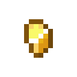 , quelques fois des lingots d'or 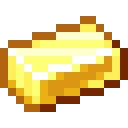 , sa chair putrifié  et une épée en or
et une épée en or  (ces objets sont aléatoires lors du ramassage du butin).
(ces objets sont aléatoires lors du ramassage du butin).
Je vous présente un youtubeur français Aurelien_Sama  qui fait plusieurs contenus sur Minecraft dont des nouveautés sur les mises à jour du jeu, des fermes/machines etc.
qui fait plusieurs contenus sur Minecraft dont des nouveautés sur les mises à jour du jeu, des fermes/machines etc.
Je vous mets ci_dessous une de ses fermes à or :
La pomme de Notch
La pomme de Notch  est le surnom de la pomme dorée enchantée du créateur de Minecraft. La pomme de Notch n'est pas fabriquable mais elle est possible à trouver dans les Donjons, les Manoirs, les Portails en ruine du nether, les Mines abandonées, les Temples du désert et les Vestiges de bastion.
est le surnom de la pomme dorée enchantée du créateur de Minecraft. La pomme de Notch n'est pas fabriquable mais elle est possible à trouver dans les Donjons, les Manoirs, les Portails en ruine du nether, les Mines abandonées, les Temples du désert et les Vestiges de bastion.
Cependant elle était possible à fabriquer à la version 1.9 avec huits blocs d'or, les fermes à or étaient plus que bénéfiques pour avoir ces pommes dorées enchantées c'est la raison pour laquelle j'en parle içi.
L'xp c'est quoi ?
L'xp, de son nom complet "expérience" se présente sous forme de petites boules de particules vertes 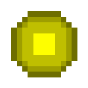. Elle s'obtient lorsque le joueur tue avec n'importe quels outils une créature ou alors en cuisant des objets dans un four  et enfin par des fermes comme celle à or.
et enfin par des fermes comme celle à or.
L'expérience se consomme très vite puisqu'elle sert à enchanter vos outils, armures mais aussi de les réparer, d'où la nécessité d'avoir une ferme qui vous en donne.
Ferme à or complexe
Vous pouvez avoir des fermes à or beaucoup plus complexe comme par exemple une ferme du youtubeur Ilmango  mais attention cela concerne les joueurs qui jouent à une version inférieur à la version 1.14 de Minecraft car un bug sur la rage des piglins sur le joueur a été fixé.Cliquez-ici
mais attention cela concerne les joueurs qui jouent à une version inférieur à la version 1.14 de Minecraft car un bug sur la rage des piglins sur le joueur a été fixé.Cliquez-ici
Je vous conseille d'y jeter un oeil car le youtubeur ne s'arrête pas à la version 1.14 .
-
Ce mode est gratuit et facile d'accès, pour plus d'informations :Cliquez-ici ↩
-
Automatique, donc la ferme en question n'a pas besoin d'assistance du joueur. ↩
-
Semi-Automatique, donc la ferme en question a besoin d'assistance du joueur. ↩
-
Villageois ↩
-
Autrefois appelé "pigmens" si cette créature ne vous ai pas familier jetez un coup d'oeil ici ↩